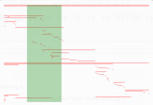

Verwendungen von Package
com.flexganttfx.extras
Packages, die com.flexganttfx.extras verwenden
-
Von impl.com.flexganttfx.extras.skin verwendete Klassen in com.flexganttfx.extrasKlasseBeschreibungA control used for displaying the list of layers used by the
GraphicsBase.A control used for rendering an overview of all activities within a Gantt chart or to be more precise aGraphicsBase.

A control used to select aVirtualGridfrom a list of possible virtual grids.